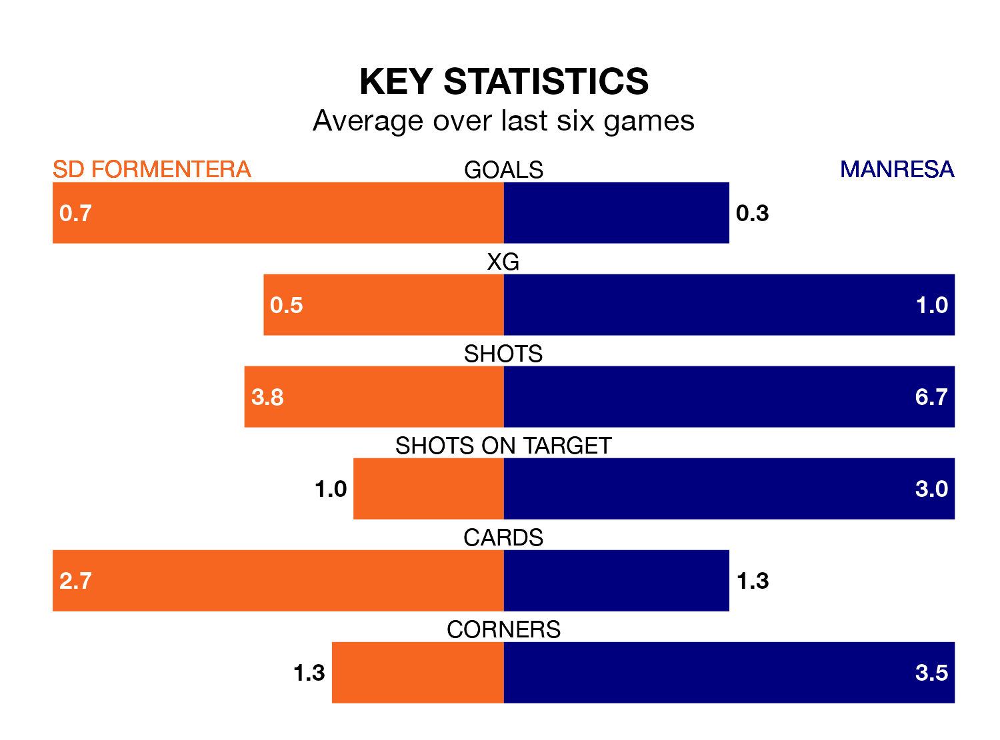

Manresa make the journey to the Estadio Municipal to play SD Formentera on early Saturday looking to pick up points to end their five-game losing streak.
Manresa's struggles have left them with just one point from their last six Segunda División RFEF Group 3 matches, while their opponents have earned five from a possible 18.
Manresa are 15th in the table after 23 games, of which they have won five and drawn seven, earning 22 points.
Formentera are one place ahead of the visitors in 14th, with seven wins and five draws putting them on 26 points.
With 18 goals in 23 games so far this season, Manresa are the league's second-lowest scorers with 0.8 goals per game. But they are conceding fewer than average too, letting in 24 goals at a rate of 1.0 per game.
The home team are also below average scorers, with 1.1 goals per game, compared to a league average of 1.2. They have conceded 1.3 goals per game.
In the last three years, Formentera and Manresa have played each other on three occasions. Manresa won one of them and they drew the other.
Their last meeting was on October 15, when Manresa won 3-0 at home.
Formentera's last match was on Sunday, a 1-0 loss against Atlético Saguntino.
Manresa lost 1-0 against Espanyol B last time out, also on Sunday.
Updated: 10:08 (UTC), 23/02/24